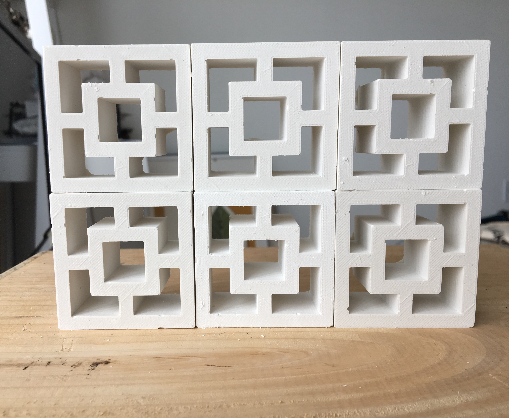
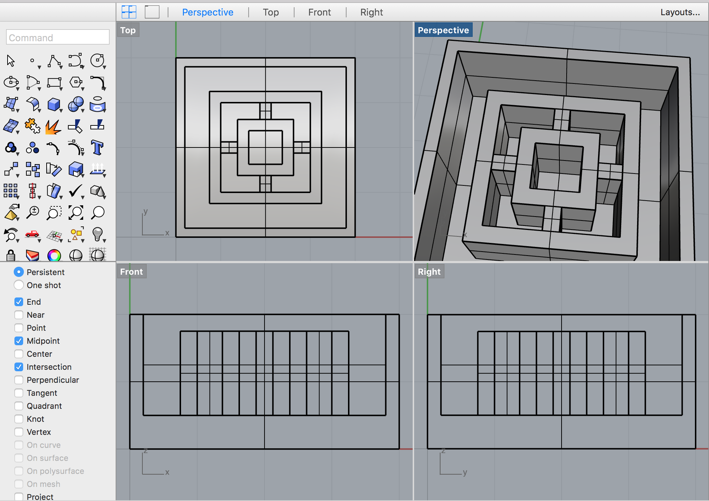

I learned molding and casting for this week's assignment. The goal of this project was to design and fabricate a silicone mold and to create four identical casts. I was excited to return back to my screen block theme and to create my own tiny screen blocks out of plaster! For this assignment I casted blocks in the "Vista Vue" pattern.
Materials and Tools:
Rhino
3D printed mold
OOMOO 30 Silicone Mold Rubber
Plaster of Paris
Lots of paper towels, mixing containers, and cleaning supplies
I designed my mold-mold in Rhino to be 3D printed. When we were assigned this project, I thought that I would mill out my design in wax. I learned from classmates that 3D printing was an easier way to go about doing this project since there were a lot of hiccups encountered with cutting the wax down to size/milling times.
First, I modeled a "Vista Vue" block pattern (flat shapes, extruded) then I added it into a 2x2" box shape in Rhino.

Next, I exported my design as an STL file to be 3D printed.